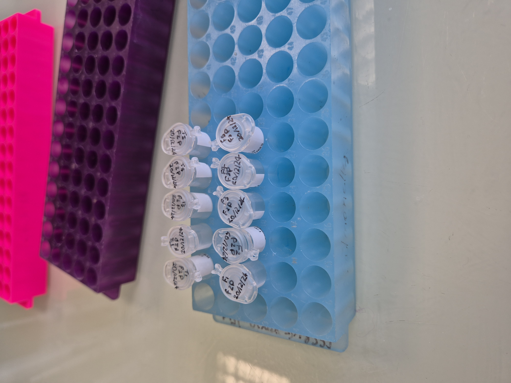
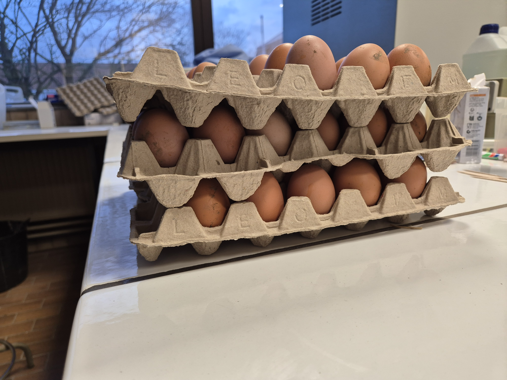

24 Avril 2025 - Participation à la Journée de la reCherche en Haute école

20 Décembre 2024 - Extraction ADN des fientes

19 Décembre 2024 - Echantillonage de fientes et Analyse des oeufs
5 décembre 2024 - Echantillonage de fientes et Analyse des oeufs
13 Novembre 2024 - Extraction ADN des aliments
12 Novembre 2024 - Extraction ADN des fientes

8 Novembre 2024 - Premier échantillonage de fientes.
1 Septembre 2024 - Début du projet.